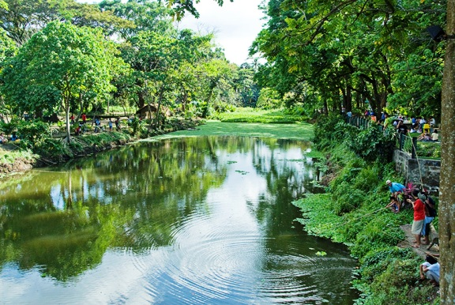

Points of interest

Taoist Temple
This is a three-story temple which in itself is a masterpiece. This temple is about a hundred years old. This magnificent temple is a worship place for the Chinese Filipino residents. A holy place where tourists can get an overview of the religious beliefs of the locals.

University of Santo Tomas Museum
A place which represents the diverse culture and heritage of Filipinos. The relics and objects kept inside are not available for the public but are also something that the students enrolled in this University have been researching on.

La Mesa Watershed
Manila's main source of water spread over an area of 2,659 hectares. This is an area of protected wetlands. Visitors can take a tour of this park, which has a path as long as 50 miles. A must-visit place for people who love bird watching.